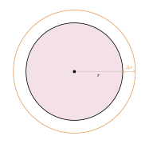

Aufgabe 7.2
Die Schnur wird um den ganzen Erdäquator gespannt und anschliessend wieder um 1 m verlängert. Was ist Ihre Erwartung, wie weit steht die Schnur jetzt ab?
- Stellen Sie die Umfangsformel für beide Kreise auf
- Berechnen Sie die Differenz der Radien
- Beachten Sie, dass der ursprüngliche Radius herausfällt
- Das Ergebnis ist unabhängig von der Grösse des Ausgangsobjekts
Zuerst die Erwartung. Die Aufgabe fragt ausdrücklich danach. Die meisten schätzen den Abstand auf einen Bruchteil eines Millimeters, weil $1$ m gegenüber $40\,000$ km verschwindend klein ist. Diese Erwartung festzuhalten, bevor gerechnet wird, ist der eigentliche didaktische Kern.
Dann die Rechnung. Mit dem alten Radius $r$ und dem neuen $r + \Delta r$:

\[2\pi(r + \Delta r) = 2\pi r + 1 \quad\Longrightarrow\quad 2\pi\,\Delta r = 1 \quad\Longrightarrow\quad \Delta r = \frac{1}{2\pi}\,\text{m} \approx 15.9\,\text{cm}.\]
Eine Katze passt darunter durch, und zwar um den ganzen Äquator herum.
Im Video: Etappe 1 · Die Kreiszahl π bei 9:11